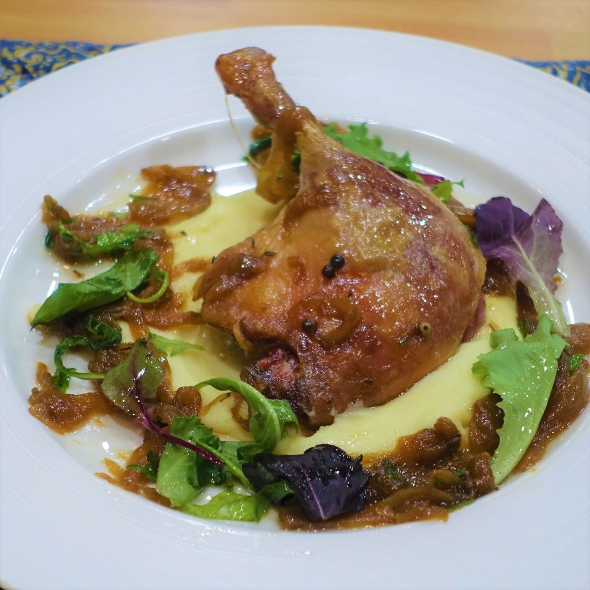

RETETE
Reteta 1 - Pulpa de rata prajita cu piure din cartofi martieni si salata Europeana
Aceasta este reteta mea de fel principal preferata. O pregatesc de fiecare data cand vreau sa ma rasfat si vine Cipri pe la mine. Se prajeste rata in tigaie cat vreti dupa gust. Cartofii martieni se fierb timp de 7 minute si se amesteca cu o felie de paine, o lingura de iaurt gras si piper dupa gust. Salata crescuta pe Europa trebuie umezita in apa timp de cateva minute, apoi se taie si se adauga ulei de masline dupa consistenta salatei.
Reteta 2 - Mix de salata cu dressing din otet de pe venus
O reteta foarte buna pentru a iti surprinde invitatii, deoarece arata a salata normala de pe Terra. Se amesteca intr-un bol legume si salata dupa alegere, iar separat se amesteca intr-un recipient otet creat pe venus 50, cateva lingurite de apa dupa gust pentru diluare, 12g zahar si 19 boabe de mazare pisate. Amestecul se incalzeste putin apoi se amesteca si se toarna peste salata

Reteta 3 - Placita Martiana cu dressing de praf Saturnesc
Aceasta placita este de obicei pentru oaspetii mai deosebiti, eu o fac adesea la camin la mine cand nu mai am ingrediente sau majoritatea sunt stricate dar le amestec cu faina martiana care amelioreaza din efectul ingredientelor stricate, iar dupa ce adaugam condimentul de pe Saturn preparatul ajunge sa aiba un gust excelent chiar! Ingredientele sunt de obicei legume de orice fel, orez si faina. Preparatul se face la cuptor pana cand faina martiana se absoarbe in restul amestecului.